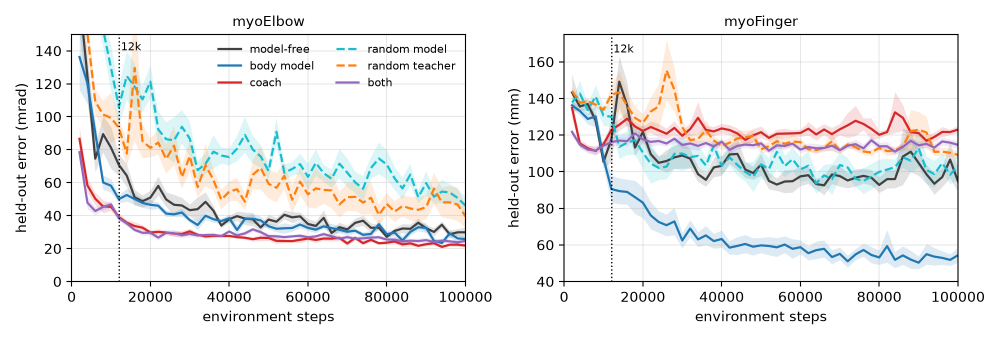
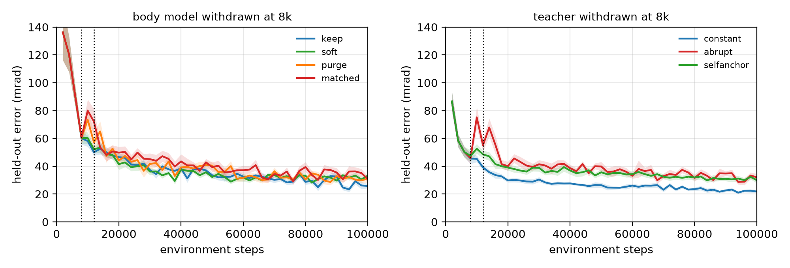
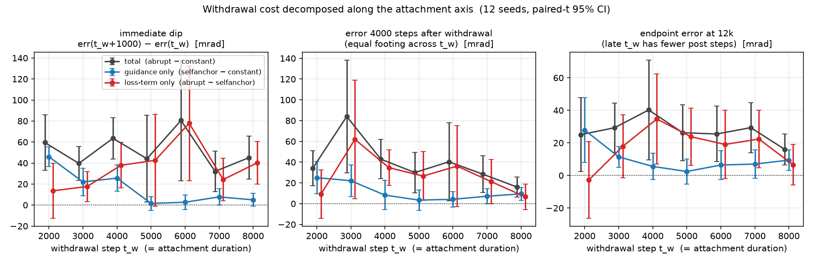
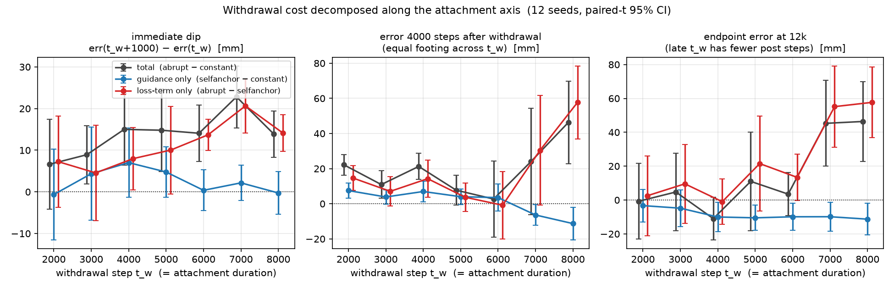

Manuscript · 2026 · sole author · prepared for IEEE Transactions on Cognitive and Developmental Systems
The body model helps where the body is hard. Guidance is only as good as its teacher. Withdrawing either prior costs no dependence.
Mu-Hua (Maurice) Wang · National Yang Ming Chiao Tung University
This paper merges and supersedes two earlier drafts (Two Routes to a Motor Prior, which scored every arm at a 12,000-step endpoint, and a separate teacher-withdrawal study). Not posted to any preprint server.
The whole study, no sound needed. Where a body model comes from, what the other route does instead, where the two end up once training has actually converged, and what each costs when it is taken away. The footage is myoFinger policies at the 100,000-step budget the paper scores; the numbers on the cards are the 12-seed means.
Sensorimotor theory offers two accounts of what a learner brings to a motor task: an internal forward model of the body, and guidance toward the correct response. We instantiate both as priors for one soft actor-critic learner on two MyoSuite musculoskeletal bodies, a frozen body model learned from reward-free babbling and a frozen teacher acting through a distillation term, with twelve matched seeds, an adversarial control for each route, and training run until the arms stop moving. Three results follow. The body model helps where the body is hard: its advantage over model-free learning is a transient on a one-joint elbow and stable on a four-joint finger. Guidance is only as good as its teacher: it keeps a small advantage on the elbow, whose teacher is competent, while on the finger, whose teacher barely moves, a student held near it ends worse than one given no aid. And withdrawing either prior costs no dependence: with the learner's real-data signal held fixed, losing the body model costs 22 mrad that has dissipated by convergence, and swapping the teacher for a zero-information snapshot of the student shows that the immediate drop after withdrawal is the deletion of a loss term, that no component grows with attachment across seven durations and two coaching regimes, and that what persists is the loss of the teacher's information. A fixed early endpoint reverses the first two verdicts; matching the two priors' data budgets changes neither.

Held-out reach error over 100,000 training steps, mean of 12 matched seeds, band ±1 SE, lower is better. The dotted line is the 12k endpoint at which the earlier draft scored everything. myoElbow (1 joint, 6 muscles, mrad): the body model's lead over model-free learning is a transient of the first 12k and is not detected at 100k (−4.09 [−11.11, +2.94]); the coach keeps a small lead (−8.06 [−15.83, −0.28]). myoFinger (4 joints, 5 muscles, mm): the body model's lead is stable, −40.29 [−57.95, −22.64] at 100k and significant at every checkpoint from 14k on; the coach, held near a teacher that barely moves, ends +28.33 [+16.11, +40.56] worse than no aid.
A unit warning that matters throughout this page. myoElbow error is in milliradians and myoFinger error is in millimetres. The two are not comparable in magnitude, and nothing on this page compares them.
Every clip is myoFinger at 100,000 steps: the same held-out target, the same start pose, frame for frame, over four training seeds, because a single seed can run opposite to a 12-seed mean. Each policy shown is the paper's own run for that seed, re-executed with the network saved and checked against the paper's held-out curve checkpoint for checkpoint before it was filmed.
The body model against nothing. Left: the frozen babble-learned body model. Right: model-free SAC with the same budget. On this body the model's advantage is not an early-speed effect; it is there at convergence, 54.37 mm against 94.66.
Guidance against the body model. Left: the distilled coach, held at constant weight near a teacher within 3.2 mm of doing nothing. Right: the body model. The coach does not improve past 12k on this body (122.77 mm at 12k, 123.00 at 100k); the gap is +68.63 [+59.19, +78.07].
Content, not machinery. Left: the babble-trained model. Right: a random-initialised model in the identical Dyna loop, same budget, same seeds. The trained model wins by −48.71 [−62.32, −35.09] at 100k; the random one is not distinguishable from no model at all.

Taking each aid away, and then waiting. myoElbow, both aids withdrawn at 8k and the runs continued to 100k. Left: the four body-model arms converge on one another; the cost the matched protocol detects at 12k (+22.11 [+4.94, +39.28]) is +5.05 [−0.98, +11.08] at 100k. Right: the two withdrawn-teacher arms stay above the constant coach, and by 100k what remains is almost entirely the teacher's information (+8.16 [+2.17, +14.14]), not the deleted loss term (+2.13 [−3.64, +7.90]).
The guidance hypothesis says augmented guidance breeds a dependence: the longer it is given, the larger the fall when it is withdrawn. Withdrawal as the literature performs it changes two things at once. Zeroing a teacher's distillation weight deletes a loss term as well as the teacher's information, and purging a body model's imagined buffer also doubles the learner's real-data signal. The paper separates each pair.
For the teacher, the control is a self-anchor: at withdrawal the teacher is replaced by a frozen copy of the student itself, so the loss term survives with the same weight and form but carries no information. Dependence is then the part of the cost that survives the swap, and the hypothesis predicts that this part grows with attachment. On two bodies, seven attachment durations and two coaching regimes, it never does.


The withdrawal cost decomposed along the attachment axis. Black: the total cost of abrupt withdrawal. Blue: the part attributable to the teacher's information (self-anchor minus constant). Red: the part that is only the deletion of the loss term. On myoElbow (top) the teacher component of the immediate dip falls with attachment, slope −6.23 [−7.79, −4.68] mrad per 1,000 attached steps; on myoFinger (bottom) the total dip does grow with attachment (+1.74 [+0.25, +3.22] mm per 1,000 steps), the textbook signature, but the teacher component is null throughout (−0.35 [−1.46, +0.75]) and the growth is entirely the loss term (+2.09 [+0.46, +3.72]). A study measuring the total drop alone would report the hypothesis confirmed on this body.
Every non-significant cell below is to be read as not detected at this power, never as equal. The paper enforces that rule and so does this page. All numbers are held-out, n = 12, paired-t 95 % intervals; negative favours the first-named arm.
| Result | Estimate (95 % CI) | Holds on |
|---|---|---|
| The body model helps where the body is hard Body model minus model-free at 100k. On the elbow the advantage was −20.72 at 12k and is a transient: across fifty checkpoints it is significant at 8k, 10k and 12k and four isolated later ones. On the finger it is significant at 45 of 50 checkpoints and at every one from 14k on. | elbow −4.09 [−11.11, +2.94] finger −40.29 [−57.95, −22.64] |
finger, stable elbow, transient |
| Guidance is only as good as its teacher Coach minus model-free at 100k. The elbow teacher is competent and the student keeps a small lead. The finger teacher scores 169.1 mm against a zero-activation no-op of 172.3; a student held near it is worse than no aid from 40k on (27 of 31 checkpoints), and worse than a student held near a random teacher (+13.86 [+7.62, +20.09]). | elbow −8.06 [−15.83, −0.28] finger +28.33 [+16.11, +40.56] |
both bodies, opposite signs |
| Withdrawing the body model costs a transient the standard protocol misses Purging the imagined buffer also doubles real transitions per update; the standard purge detects nothing (+7.17 [−10.95, +25.29]). Holding real-data content fixed, the same withdrawal costs +22.11 at 12k. By 100k the four arms sit within 5–7 mrad of one another. Elbow only; on the finger neither protocol detects a cost. | 12k +22.11 [+4.94, +39.28] 100k +5.05 [−0.98, +11.08] |
12k gone by 100k |
| Withdrawing the teacher costs no dependence At 8k on the elbow, 89 % of the immediate dip is the deleted loss term, all of it on the finger. What persists to 100k is the loss of the teacher's information (self-anchor minus constant), while the loss-term component is no longer detected. Across seven attachment durations the teacher component never grows. | total +10.29 [+3.96, +16.62] teacher +8.16 [+2.17, +14.14] loss term +2.13 [−3.64, +7.90] |
persists, not dependence |
| When guidance replaces the learner's own signal, the growing cost is the learner's, not the teacher's In the cloning-only regime the cost of losing the teacher grows with attachment, an order of magnitude above the additive regime. Keeping the real teacher while switching on the student's own gradient produces the same collapse, seed by seed, within 3.1 mrad at every attachment point: the known collapse of a behaviour-cloned policy under off-policy fine-tuning. | selfanchor − gateon −0.13 [−3.44, +3.19] per 1,000 steps |
elbow, four attachment points |
| Content, not machinery The babble-trained model beats a random-initialised one in identical Dyna machinery; the trained teacher beats a random one in the identical distillation loss on the elbow, and loses to it on the finger, where the trained teacher is a near-no-op. | model −20.29 [−32.00, −8.59] / −48.71 [−62.32, −35.09] teacher −17.69 [−33.70, −1.68] / +13.86 [+7.62, +20.09] |
both bodies |
| The comparison was not bought with data The body model saw 3.3× (elbow) to 6.7× (finger) more transitions than the teacher. Cut to the teacher's 30k, its endpoint moves by an amount that is not detected, and the finger reversal survives. | +1.55 [−0.87, +3.97] mrad +2.75 [−12.77, +18.27] mm |
12k |
| The earlier 12k endpoint read the first two results the other way It sat inside the only run of consecutive checkpoints at which the elbow benefit was visible, and inside the only dip in which the finger benefit was not. The remedy is not a particular larger budget but a check that the arms have stopped moving. | elbow prior − blank −20.72 → −4.09 finger −27.10 → −40.29 |
withdrawn claim |
One soft actor-critic backbone in every condition (two hidden layers of 128, batch 128, update-to-data ratio 2), 12 matched seeds per arm, and evaluation on twenty held-out targets disjoint from the eight training targets. The body model is a forward model learned once from task-agnostic, reward-free Ornstein–Uhlenbeck babbling, then frozen and used for short-horizon Dyna rollouts. The teacher is an actor trained for 30k rewarded steps on the same body, frozen, and attached through a distillation term on the student's actor loss at constant weight.
Each route is given the adversarial control the other has: a random-initialised model in the same imagination machinery, a random-initialised teacher in the same distillation loss. Withdrawal of the body model has four arms (keep, soft, purge, and a matched-replay arm that holds distinct real transitions per update fixed); withdrawal of the teacher has the abrupt cut, the self-anchor, a random-anchor, and in the cloning-only regime a gate-on arm that switches on the student's own gradient while keeping the real teacher. The core grid and both withdrawal decompositions are run to 100,000 steps; the attachment sweep, the replacing regime and the budget-matching check are 12k experiments.
Behind the seven tables: 324 at the converged budget or its withdrawal arms, 720 in the attachment sweep, replacing regime, 12k withdrawal decomposition and budget-matching check. Every arm has twelve matched seeds.
The babble data is task-agnostic and reward-free: 100,000 transitions on myoElbow, 200,000 on myoFinger, recorded before any task exists.
Every table cell, every significance mark, every interval and rounded figure quoted in the prose, and the hyperparameters stated in the Method, rebuilt from the raw per-seed files and build logs by seven audit scripts. Zero mismatches.
Every arm of the converged grid reproduces the earlier study's 12k run at its 12k checkpoint, seed for seed; so do the 48 withdrawal arms and the 12 self-anchor runs. New arms are measured on the same footing as the old ones.
Claims withdrawn in the course of this. The earlier draft's endpoint verdicts on both bodies; a claim that both random controls are worse than model-free learning (true of the random model on the elbow and the random teacher on the finger, not detected for the other two); and a stale set of attachment slopes in the second draft, replaced by the recomputed ones.